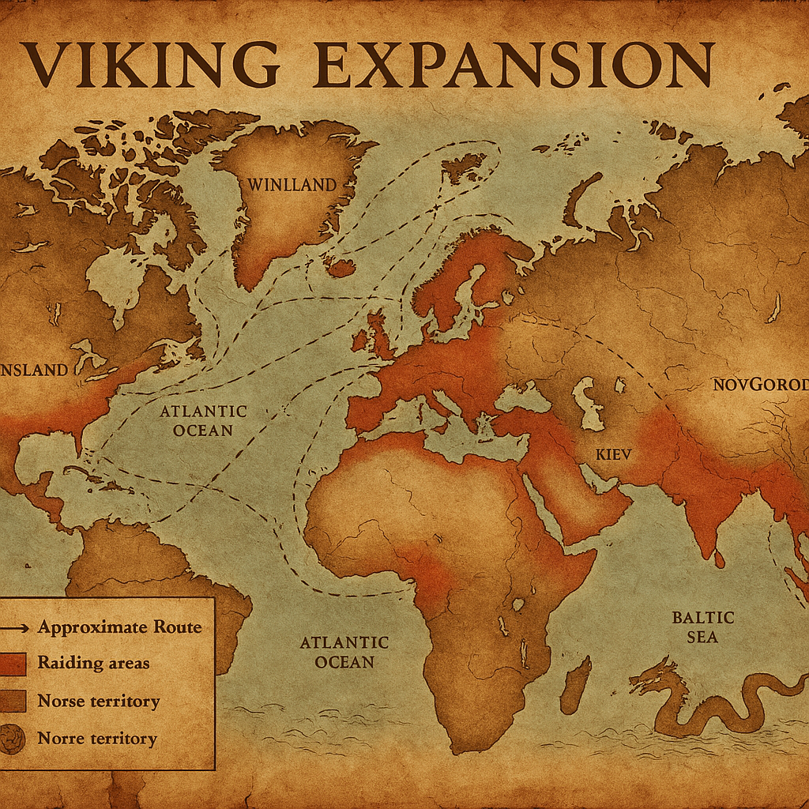
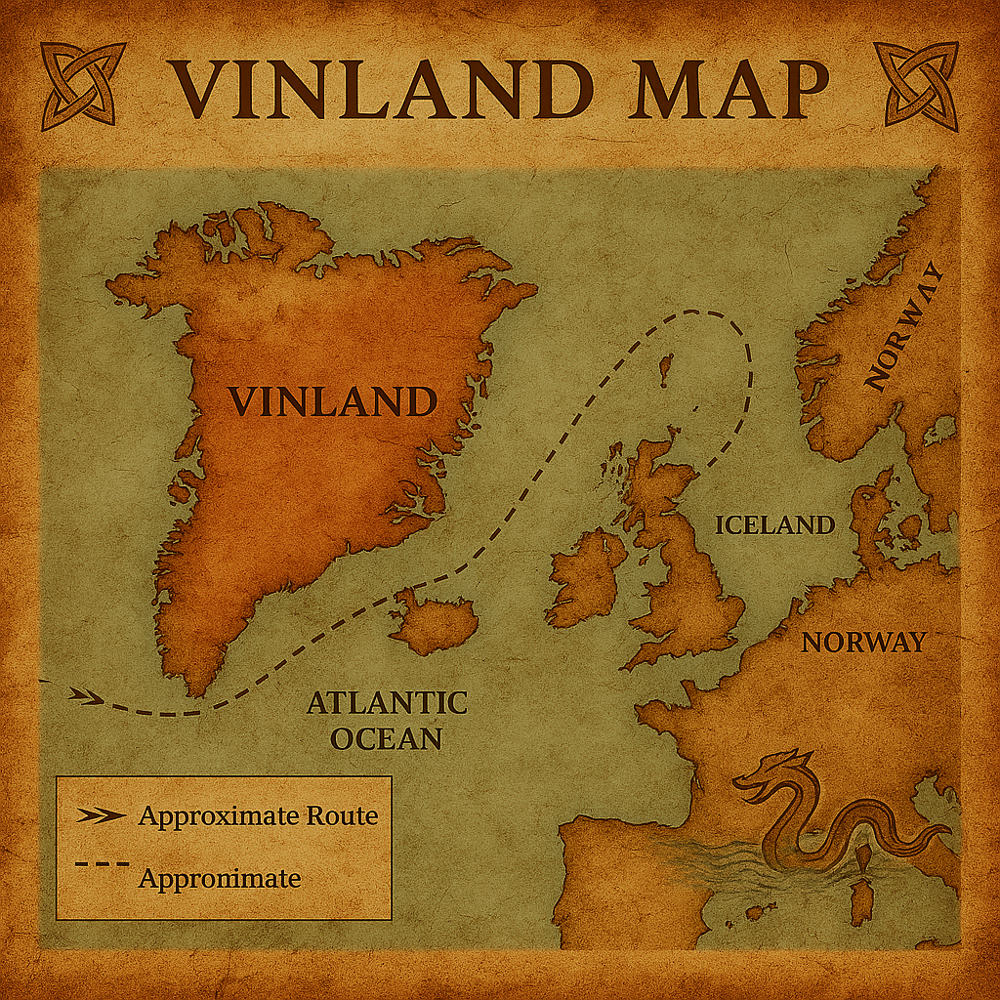
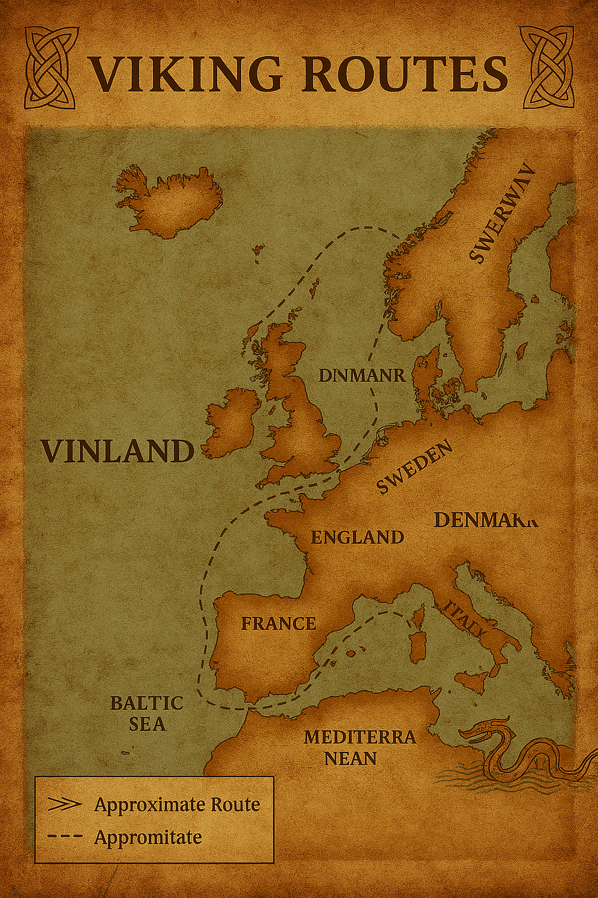

Le mappe vichinghe non sono soltanto oggetti da osservare: sono portali. Appena le si sfiora con lo sguardo, si ha la sensazione di udire il crepitio del fuoco in una lunga casa del Nord, mentre un vecchio skald racconta di terre lontane e mari che nessun uomo aveva osato attraversare prima. Ogni linea tracciata, ogni costa delineata, ogni simbolo inciso sembra vibrare di un’energia antica, come se fosse stato lo stesso Odino a guidare la mano del cartografo. Non rappresentano semplicemente il mondo: lo evocano, lo risvegliano, lo rendono vivo.
In queste mappe, il mare non è mai un semplice spazio blu. È un’entità, un avversario, un alleato mutevole. Le sue onde sembrano muoversi anche sulla pergamena, come se volessero ricordare a chi osserva che nessun viaggio è mai garantito, che ogni rotta è una sfida contro il destino. Le coste emergono come denti di un gigante addormentato, frastagliate e severe, eppure irresistibili per chi sente il richiamo dell’avventura. Le isole britanniche appaiono come fortezze da conquistare, l’Islanda come un faro nel gelo, la Groenlandia come un enigma avvolto nella nebbia, e il Vinland come un sussurro di un mondo nuovo, quasi mitico.
Le rotte tracciate sulle mappe sembrano vene pulsanti, arterie che collegano il cuore della Scandinavia a terre lontane. Ogni linea racconta una storia: la furia delle tempeste, il canto delle vele gonfie dal vento, il clangore degli scudi, il silenzio delle notti artiche illuminate solo dall’aurora boreale. Sono percorsi che non appartengono solo alla geografia, ma alla memoria collettiva di un popolo che ha trasformato la navigazione in un atto sacro. Ogni viaggio era una prova, ogni approdo una conquista, ogni ritorno un trionfo o una ferita.
Le mappe artistiche moderne amplificano questo spirito con una forza quasi mistica. La pergamena sembra consumata da secoli di tempeste, come se fosse stata recuperata da un relitto affondato. Le rune brillano come segni lasciati dagli dèi per guidare i mortali. Draghi marini, serpenti cosmici e creature delle saghe si intrecciano ai margini, c ome guardiani posti a sorvegliare i confini del mondo conosciuto. I colori sono intensi, profondi, primordiali: il blu degli abissi, il nero del carbone, il rosso del sangue versato in battaglia, l’oro pallido del sole che si riflette sul ghiaccio.
Eppure, ciò che rende davvero epiche le mappe vichinghe è ciò che non mostrano. Gli spazi vuoti, le zone inesplorate, le terre senza nome. In quei vuoti si nasconde l’essenza stessa dell’epopea nordica: il desiderio di andare oltre, di sfidare l’ignoto, di cercare ciò che nessuno ha ancora trovato. Per i Vichinghi, una mappa non era un limite, ma un invito. Dove finiva l’inchiostro, iniziava il coraggio.
Forse è per questo che, ancora oggi, queste mappe ci affascinano più di molte altre. Non sono fredde rappresentazioni del mondo, ma racconti di un’umanità che non si accontentava di restare ferma. Sono testimonianze di un popolo che ha guardato l’orizzonte e ha deciso di attraversarlo. Sono simboli di un’epoca in cui il mondo era più grande, più pericoloso, più misterioso, e proprio per questo più degno di essere vissuto. Le mappe vichinghe non indicano soltanto dove andare. Indicano chi bisogna diventare per avere il coraggio di partire.


